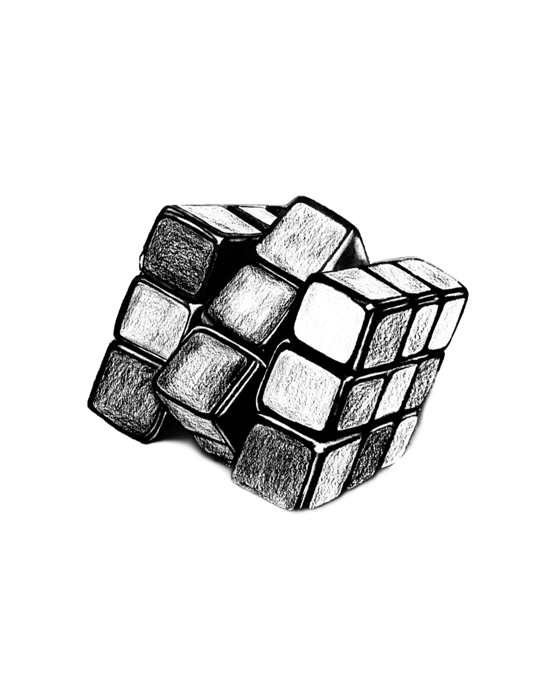
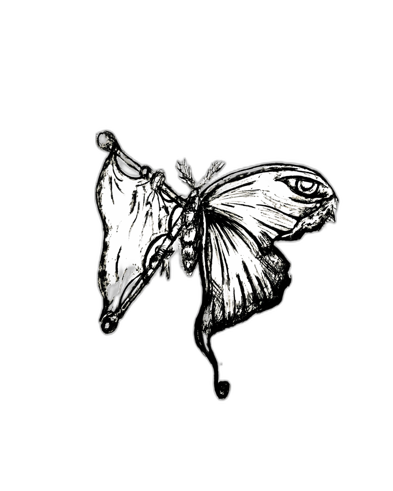
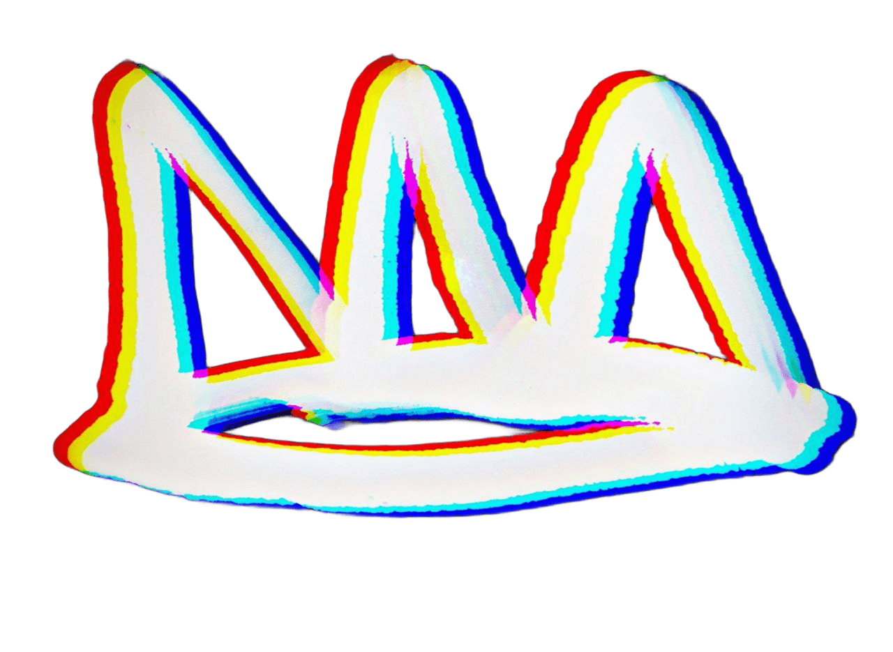

Hu Bantu is a multidisciplinary creative agency specializing in music production, architecture, engineering, and fine arts. Founded in 2019 as a visionary brainchild by a group of college peers, our mission was built on an innovative idea: to unite local creatives into one expansive marketplace. We provide a thriving ecosystem where artists can collaborate, grow, and build sustainable careers through their craft. Due to the easy collaboration algorithm, artists can "blow up" with minimal effort if exposed to the market that Hu Bantu creates. The soft tensions, fleeting emotions, and silent systems that shape our lives. My work weaves together storytelling, politics, and existential thoughts, revealing experiences lingering beneath the surface of ordinary moments. Through a mix of realism and metaphor, I explore various themes. Our art invites reflection, not just on what is seen, but on what is felt and often left unsaid. The soft tensions, fleeting emotions, and silent systems that shape our lives. Our work weaves together storytelling, politics, and existential thoughts, revealing experiences lingering beneath the surface of ordinary moments. Through a mix of realism and metaphor, I explore various themes. Bantu art invites reflection, not just on what is seen, but on what is felt and often left unsaid.
